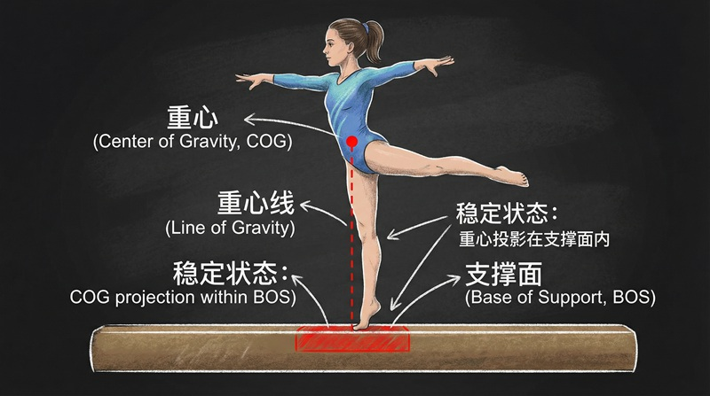
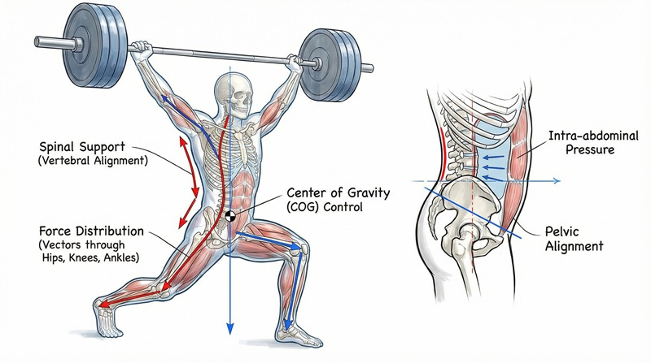

返回课程列表

第二课
静力学基础
运动员的受力分析与平衡稳定性
⏱️ 约45分钟
站立、支撑、平衡——这些看似简单的动作背后都有精密的力学原理。运动员的核心力量训练本质上就是提高身体的力学稳定性。
人体的受力分析
人体站立时受到重力和地面支撑力的作用。重心位置决定稳定性，支撑面积越大、重心越低，稳定性越好。这是所有运动姿势的基础。
运动姿势的力学分析
不同运动中的平衡策略：
- 相扑：宽站姿降低重心，增大支撑面积，提高稳定性
- 体操平衡木：窄支撑面上通过微调重心位置维持平衡
- 滑冰：单脚支撑时身体倾斜，重力与离心力合力通过支撑点
- 瑜伽：树式站立训练本体感觉，提高动态平衡能力
杠杆原理与人体运动
人体骨骼肌肉系统本质上是一系列杠杆。关节是支点，肌肉提供动力，骨骼传递力。不同类型的杠杆适合不同的运动需求。


人体杠杆系统
人体中的三类杠杆：
- 第一类杠杆（点头）：支点在中间，颈椎关节为支点，后颈肌肉为动力
- 第二类杠杆（踮脚）：阻力在中间，脚趾为支点，小腿肌肉为动力，效率高
- 第三类杠杆（屈臂）：动力在中间，肘关节为支点，肱二头肌为动力，速度快
- 运动优化：了解杠杆类型有助于设计更高效的训练动作